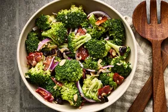

Salad

This homemade broccoli salad uses a tasty combination of fresh broccoli, cranberries, nuts, and bacon tossed in a rich and creamy dressing. You might want to double this recipe for a party or potluck — it goes quick!
Broccoli salad is a total crowd-pleaser, and one dish that will always be completely devoured at your summer potluck or barbecue. This recipe comes together in just 25 minutes (and can be made ahead of time), so you can whip up a big batch in practically no time at all.
The creamy salad makes for the perfect side dish or light meal — and you can dress it up or down however you like. Plus, with all the other ingredients, even the picky eaters will love this green-filled dish.
Ingredients
- broccoli
- mayo
- vinegar
- tomato
- egg
- bacon
Steps
- Make the dressing.
- Cook and crumble the bacon.
- Combine the ingredients.